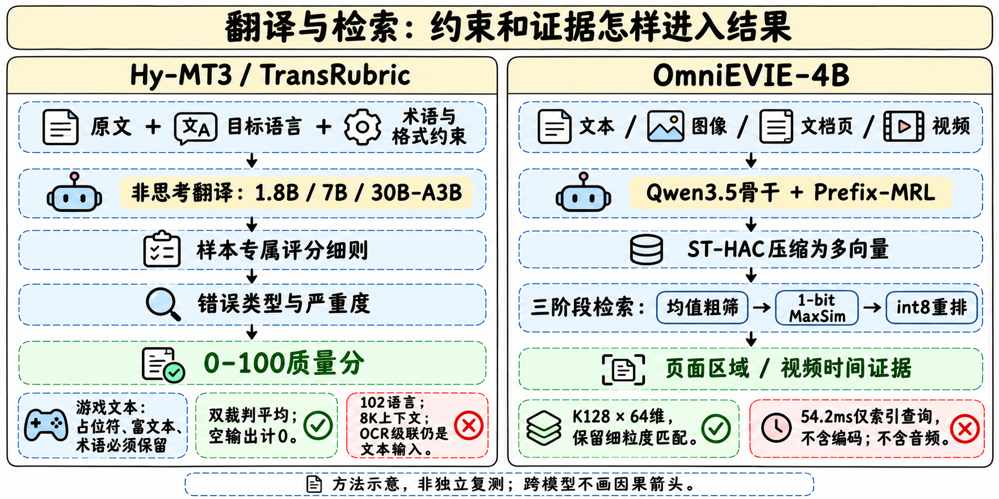

Hy-MT3 — 把翻译质量拆到错误与约束，而非只看流畅度

规格与任务边界
| 项目 | 官方记录 | 使用含义 |
|---|---|---|
| 规模 | 1.8B、7B、30B-A3B MoE | 三个尺寸不是三个发布族 |
| 语言 | 102，来自38既有语言/方言加64新增 | 不能把HF语言标签数量当独立任务数 |
| 上下文 / 输出 | 卡片max_context 8192；建议max_tokens4096 | 不是长文无限窗口 |
| 思考 | 本文Hy-MT3全部non-thinking；(T)为比较模型思考模式 | “最佳”只对应所测非思考集合 |
| 默认系统提示 | 无 | 源/目标语言用完整名称；中文/英文指令分别用对应名称 |
| 采样 | 1.8/7B：T0.7、top_p0.6、top_k20、重复惩罚1.05；30B：T0.7、top_p1、top_k-1、重复惩罚1 | 不要把小模型推荐配置套到MoE |
| 开放 | Apache2.0；BF16/FP8/GGUF | 量化质量另测，不新增正代 |
翻译约束包括术语表、口语/书面风格、个人偏好、分隔符数量与位置，以及JSON/XML中只改可见内容、保留key/占位符/标签。TiMi工程覆盖采集中文基线、译文表、编辑器还原、截图LQA与缺陷回归；它不意味着翻译模型原生会操作游戏引擎。其4500条、15品类、14目标语术语表是单独的游戏评测材料，不能混作报告里每项实验的样本量。
TransRubric如何生成可解释分数
报告对通常翻译分数使用DeepSeek-V4.1-Flash与Qwen3.5-397B-A17B两裁判的算术平均。裁判按完整性、准确性、术语、指令遵循等类型与严重度定位问题，给0–100分。WildMTBench无参考译文；FLORES、WMT26、少数语言和HardMTBench使用参考式评价。固定期望样本数作分母，空输出、缺失译文计0；不能丢弃失败样本后抬高均值。IFMTBench另用官方规则和GPT-OSS-120B，不能写成同一双裁判协议。
示意汇总为 \(S(x)=\tfrac12[S_{D}(x)+S_{Q}(x)]\)，这里只描述报告汇总，不是模型训练loss。WMT26元评价的底层裁判改为Gemini3.6Flash：PDP0.744、SPA0.920、平均0.832；同底层官方参赛系统为0.736/0.924/0.830。因此优势主要在细则组织，不能把元评价裁判和最终模型比较裁判混为一谈。
与10名译者的比较涉及217源文×3译文=651条、651对：跨10次机器评分的平均标准差3.31，对应跨10人的15.57；这比较的是重复运行稳定性与人际分歧，不证明机器更准确。机器pairwise accuracy59.91%，排11名评分者第4，高于7名人工，仍低于3名；gold由专家修订人工评分形成，报告也承认可能偏向人工。
结果、反例与计算条件
| 模型 / 条件 | 通用平均 TransRubric / GEMBA | WildMTBench | HardMTBench T / G | IFMT总分 |
|---|---|---|---|---|
| Hy-MT3 30B-A3B 非思考 | 88.50 / 81.87 | 91.30 | 88.93 / 89.80 | 86.66 |
| Hy-MT3 7B 非思考 | 86.12 / 80.39 | 89.09 | 83.91 / 86.50 | 83.66 |
| Hy-MT3 1.8B 非思考 | 75.05 / 71.66 | 84.45 | 76.44 / 81.77 | 68.34 |
| Hy-MT2 30B-A3B 非思考 | 76.75 / 75.17 | 83.62 | 81.38 / 88.84 | 83.35 |
| Qwen3.8-Max 非思考 | 88.02 / 81.08 | 90.94 | 92.30 / 91.71 | 86.49 |
| GPT6.1Sol 思考 | 92.08 / 82.96 | 92.50 | 93.26 / 91.98 | 88.38 |
| DeepSeek4.1Flash 思考 | 94.09 / 82.68 | 94.21 | 94.38 / 91.53 | 85.37 |
GEMBA为GPT-OSS-120B medium、语言对宏平均。通用平均等权合并FLORES33语全对、低资源、WMT26、普通话↔少数语言四块，不是按全部译文加权。WildMTBench为5000条、10领域各500；Hy-MT3在教育89.73、体育90.17，均低于Qwen3.8-Max非思考90.05/91.14。报告原始所有表已单独转录保存，表格缺失项保留缺失，未用最佳值补齐。
| 5000条真实场景错误比例 | MT2 30B | MT3 30B | 正确读法 |
|---|---|---|---|
| 错译 | 56.0% | 31.8% | 相对减少43%，不是下降43个百分点 |
| 漏译/增译 | 21.2% | 5.5% | 相对减少74%；下降15.7个百分点 |
| 术语 | 28.3% | 17.9% | 相对减少37% |
| 指令 | 16.5% | 9.8% | 相对减少40% |
| 低分<60 | 7.4% | 2.2% | 相对减少70% |
错误类型可以重叠，不能相加当错误总率。游戏人工评测中30B off-target/占位符/富文本/术语分别0.24/0.08/0.08/0.08%，总分89.6；Gemini3.1Pro思考为0.38/0.08/0.19/0.54%，88.7。VISTA-Bench同OCR文字输入得45.73，GPT6.1Sol思考51.97，绝对分数受OCR丢失信息影响。效率估算约 \(2P_{active}N_{generated}\)，包含比较模型思考token；未披露参数模型画虚线，因此“30倍”不是同硬件实测加速。
可迁移实验与未解决问题
本次未证明模型在用户的金融/Agent任务提分；报告训练细节不够重建完整权重。量化表显示1.8B FP8 IFMT从68.34降至65.09，故“低精度基本无损”不能全尺寸一概而论。完整语言表、量化表与所有比较行见本地报告原表。
官方来源与关联资料
- mt-README.md
- game-README.md
- mt-github-README.md
- mt-report.html
- mt-abstract.html
- mt-transrubric.md
- mt-training.md
📊 中文Poster：中文Poster
官方原图与机制对照